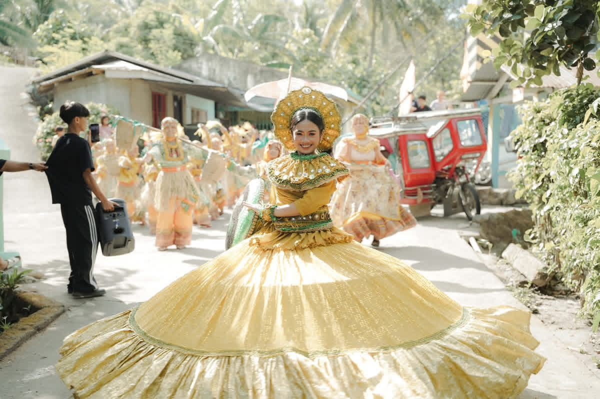

Hello!
Hi! I'm Zynnclyr Ann P. Condes, a first-year BS Computer Science student at Bicol University. I'm an Ate, a dreamer, a dance enthusiast, and someone who enjoys discovering new things while finding beauty in life's little moments.
About Me

My Story
My name is Zynnclyr Ann P. Condes. I am the eldest among my siblings, and being an Ate has taught me to become responsible, independent, and understanding. My family is one of my biggest motivations, and I hope to build a better future for them and myself. I believe that every experience, whether challenging or rewarding, helps me become a better version of myself.
Outside academics, I love dancing, especially hip-hop. I also had the opportunity to experience being a Festival Queen, which became one of my memorable experiences. I enjoy reading romance-comedy and science fiction stories, watching Korean and Chinese dramas, and listening to K-pop, especially BLACKPINK. I also appreciate simple things such as spending time with the people I love and creating memories.
A Few Things About Me
- I'm the eldest among my siblings.
- I enjoy dancing, especially hip-hop.
- I've experienced being a Festival Queen.
- I love Korean and Chinese dramas.
- BLACKPINK is one of my favorite K-pop groups.
- Burgundy is my favorite color.
My Path into Computing
Choosing Computer Science was a step toward exploring something beyond what I already knew. I became interested in technology, programming, and understanding how computers work. I find it fascinating that people can turn ideas into something useful through code and technology.
As a first-year student at Bicol University, I am still discovering the different areas of Computer Science. Learning programming has challenged me to think logically, analyze problems, and become more patient when finding solutions. There are times when concepts feel difficult, but I see those experiences as opportunities to improve.
I know that this journey will not always be easy, but I am willing to learn, make mistakes, and keep improving. For me, Computer Science is not just about learning how to code. It is also about developing creativity, curiosity, and problem-solving skills.
Favorites and Skills
My Favorite Platform
YouTube is my favorite platform because I can explore different kinds of content, learn new things, and enjoy videos during my free time.
Visit my favorite platform: YouTube
My Interests and Skills
| Interest / Skill | Description |
|---|---|
| Dancing | Especially hip-hop and festival performances. |
| Programming | Learning how to write code and solve problems. |
| Reading | Enjoying romance-comedy and science fiction stories. |
| Technology | Exploring computers and learning new technologies. |
My Goals
I have many dreams that I want to achieve. I understand that reaching them requires patience, dedication, and consistent effort. I may not have everything figured out yet, but I know the direction I want to take.
What I Hope to Achieve
- Successfully finish my Computer Science degree.
- Improve my programming and technical skills.
- Become more confident in solving complex problems.
- Explore opportunities in the technology field.
- Build a successful future and help my family.
Most importantly, I want to grow not only as a student but also as a person who can make a positive difference in the lives of the people around me.
My Reflection
Creating this webpage allowed me to express myself in a way that goes beyond a simple introduction. While working on it, I realized that a personal webpage is not just about presenting information. It is also about communicating personality, experiences, interests, and goals through both content and design.
Compared to my previous About Me activity, I improved this version by expanding my personal story, adding more meaningful sections, organizing my content, and incorporating additional HTML elements. I also learned the importance of using semantic HTML to make a webpage more organized and understandable.
Working with HTML and CSS helped me understand how structure and design work together. I also realized that creating a good webpage requires attention to detail, creativity, and patience. There were things I needed to adjust along the way, but every revision helped me learn something new.
Overall, this project reminded me that learning takes time. Just like building a webpage, achieving my dreams requires starting with small steps and continuously improving along the way.
"Every little step counts when you're building the future you dream of."